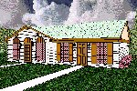

Welcome to the Custom Real Estate Browser!
The Browser is an interactive service for home buyers and real estate investors, and is provided free of charge by Platypus Realty. (Platypus Realty is an itty, bitty division of Platypus Mega Industries, Inc.)
Taking a personal, self-guided tour of one of our properties is as easy as 1-2-3!

This duplex in Hanging Gardens Estates is within easy walking distance of John Paul Jones Elementary and Falling Rock Middle School. The Big Purple Dinosaur Academy for Wee Ones is only a five minute drive away and a convenient bus stop provides easy transportation to Greenbaum High School (home of the Fighting Weasels!). Also located within two miles are Bennie's Pay and Save Grocery, the Proton UltraPlex Cinema (72 theatres), Arnold's Bowl-A-Rama, the Happy Fisherman All-You-Can-Eat Seafood Restaurant, and Soggy Olive Liquors and Wines.